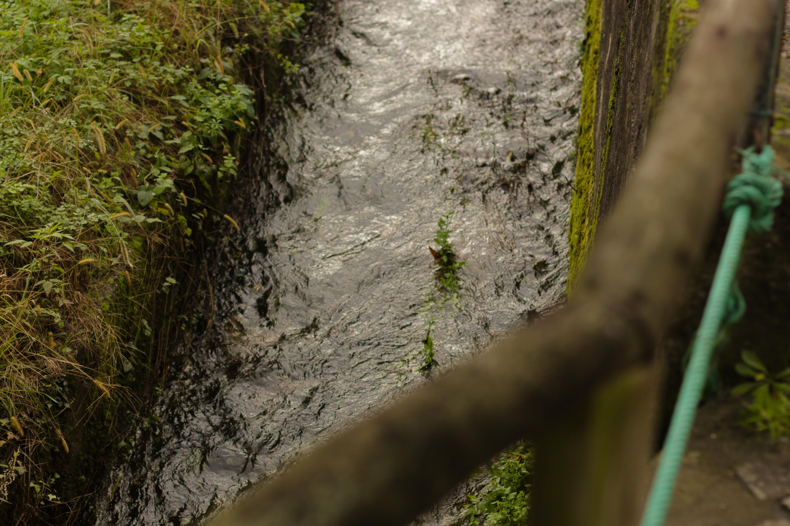
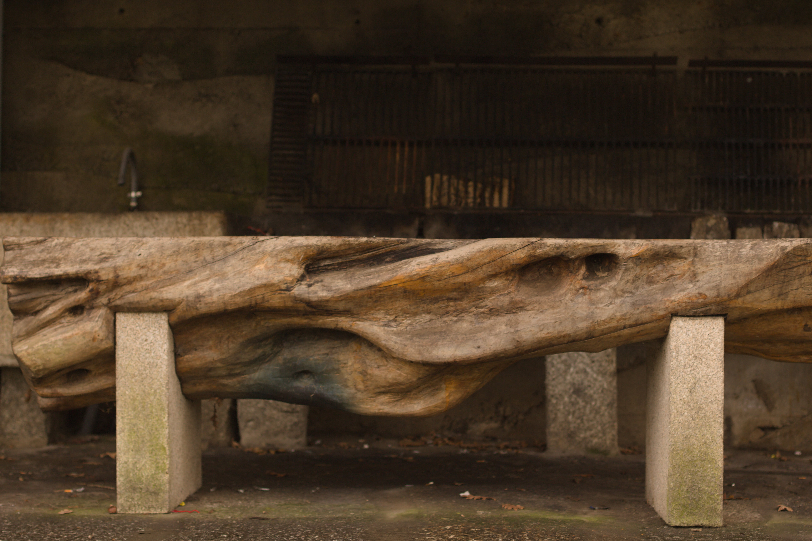
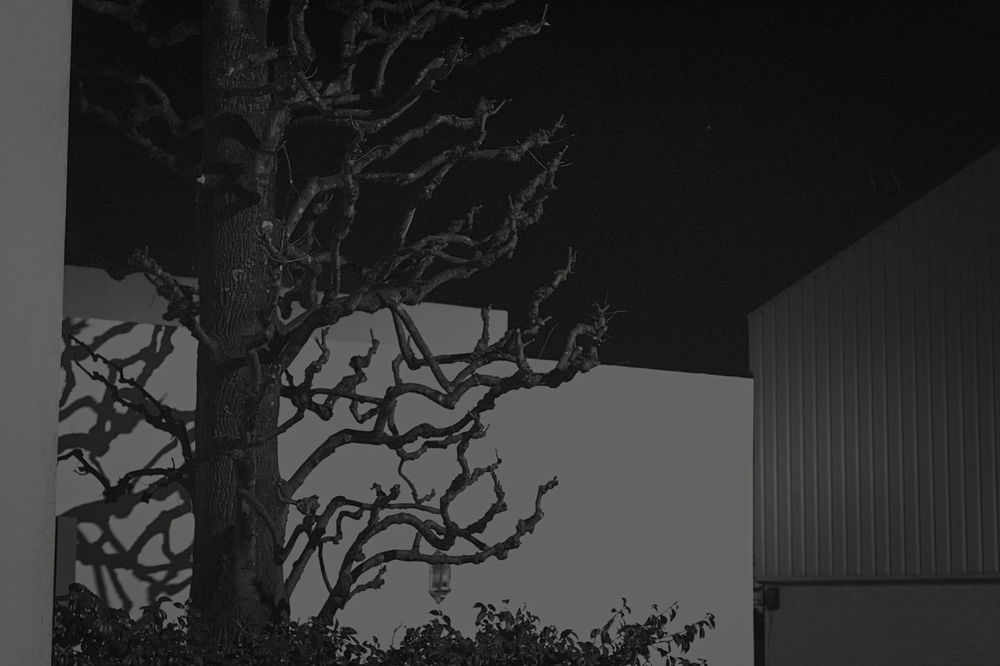
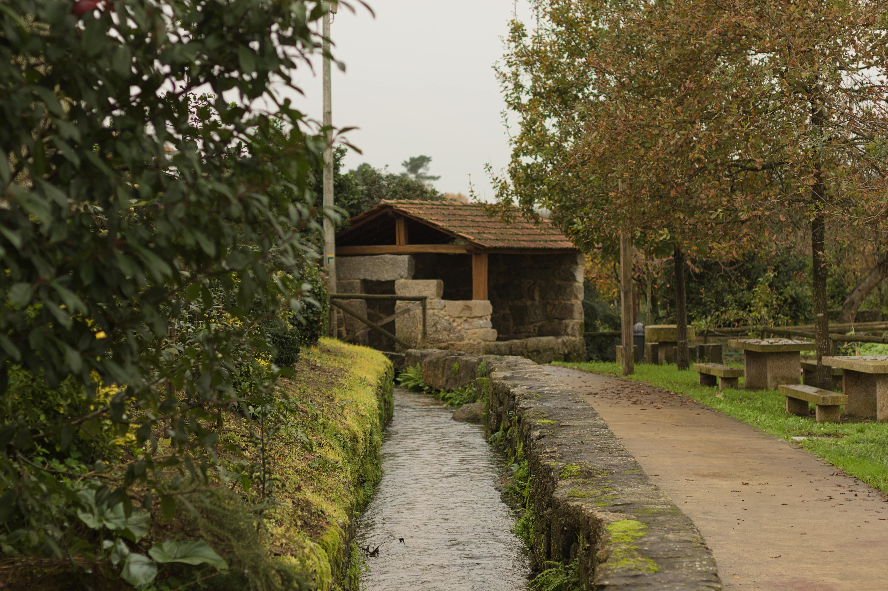

creek; (krēk): minor tributary of a river..

trunk; (trəNGk): the main woody stem of a tree as distinct from its branches and roots.

tree; (trē): a woody perennial plant, typically having a single stem or trunk.

mill; (mil): a building equipped with machinery for grinding grain into flour.